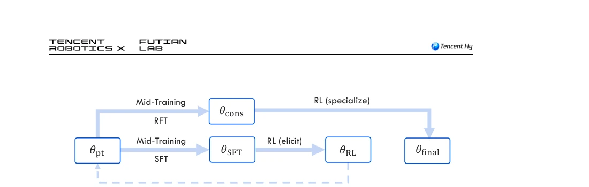
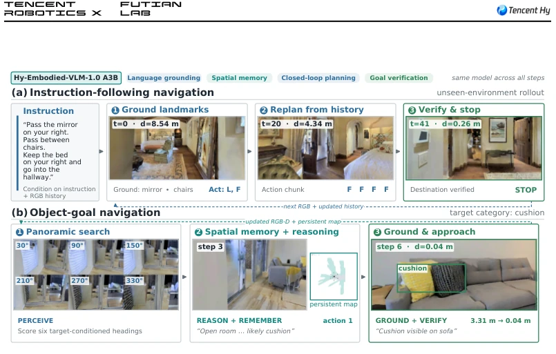
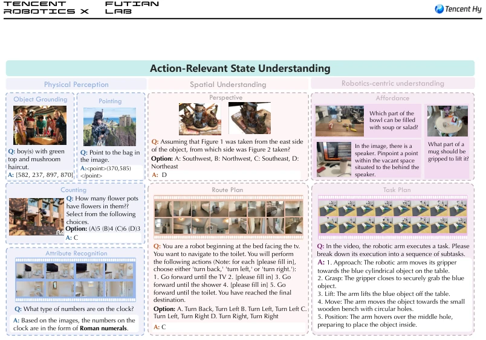
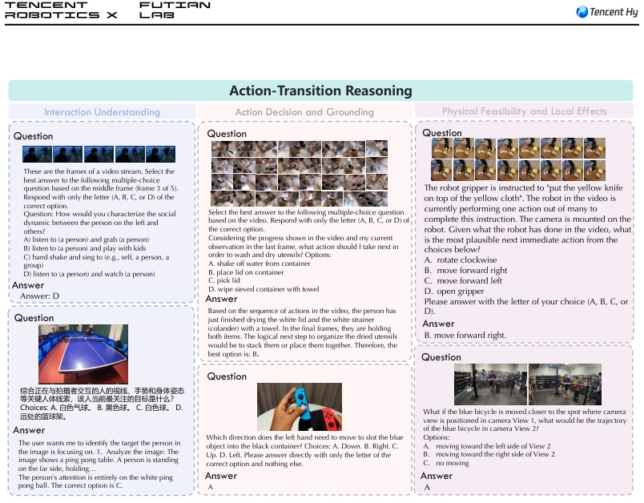
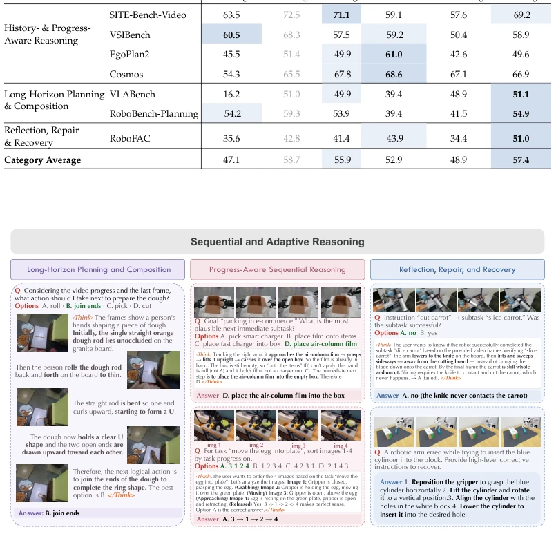

Fig. 2: Capability Taxonomy of Hy-Embodied-VLM-1.0. We organize embodied intelligence into a three-level hierarchy that progresses from action-relevant state understanding, to action-transition reasoning, and finally to sequential and adaptive reasoning. The first level builds an actionable representation of the current physical scene; the second level grounds immediate actions and reasons about the local transitions they induce; and the third level composes and revises decisions over time through planning, navigation, reflection, and recovery. This taxonomy guides our data construction and benchmark evaluation, linking perception, action, and feedback into a unified capability progression.
Fig. 3: Data Distribution for Supervised Fine-tuning and Reinforcement Learning. We organize the post-training data of Hy-Embodied-VLM-1.0 according to the proposed ca- pability taxonomy, covering state understanding, transition reasoning, and sequential rea- soning. The SFT data expands the inherited Hy-Embodied-0.5 mixture with additional capability-oriented supervision for depth reasoning, task-conditioned grounding, social interaction, trajectory reasoning, physical-causal reasoning, failure-aware reasoning, and vision-language navigation. The RL mixture focuses on verifiable embodied reasoning tasks, providing reward-driven supervision across state reasoning, grounding, interaction, planning, reflection, and navigation-related capabilities.

Fig. 4: Training pipeline of Hy-Embodied-VLM-1.0. Supervised fine-tuning and RL turn θpt into a reasoner θrl, whose rollouts are used to re-train a fresh model θcons from θpt by rejection-sampling fine-tuning; a final reward-specialized RL stage yields the deployed model θfinal.
Fig. 1: Performance Comparison. Hy-Embodied-VLM-1.0 consistently outperforms strong VLM baselines of comparable scale across the three capability levels of our embodied intelligence taxonomy, achieving the best overall performance across all 38 benchmarks.

Fig. 8: Closed-loop navigation with Hy-Embodied-VLM-1.0 A3B. R2R-CE and MP3D ObjectNav trajectories illustrate how the policy maps successive observations and navigation states to action sequences, replanning decisions, subgoals, and termination predictions.
其他图片Other Figures

Fig. 5: Qualitative analysis of action-relevant state understanding. Hy-Embodied-VLM-1.0 A3B demonstrates physical and semantic perception, spatial understanding, and robotics- centric understanding across counting, pointing, object grounding, attribute recognition, spatial relations, viewpoint reasoning, navigation, affordance grounding, and manipulation- task decomposition.

Fig. 6: Qualitative analysis of action-transition reasoning. Hy-Embodied-VLM-1.0 A3B rec- ognizes interaction intent, selects progress-consistent actions, grounds directional decisions, and reasons about local physical feasibility and viewpoint-dependent effects.

Fig. 7: Qualitative analysis of sequential and adaptive reasoning. Hy-Embodied-VLM-1.0 A3B performs long-horizon action composition, progress-aware temporal reasoning, failure diagnosis, and corrective recovery across human and robotic task sequences.